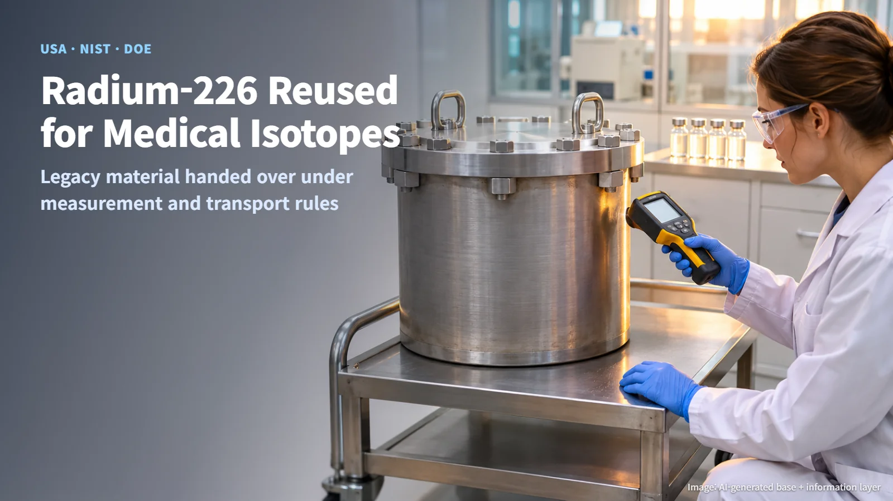
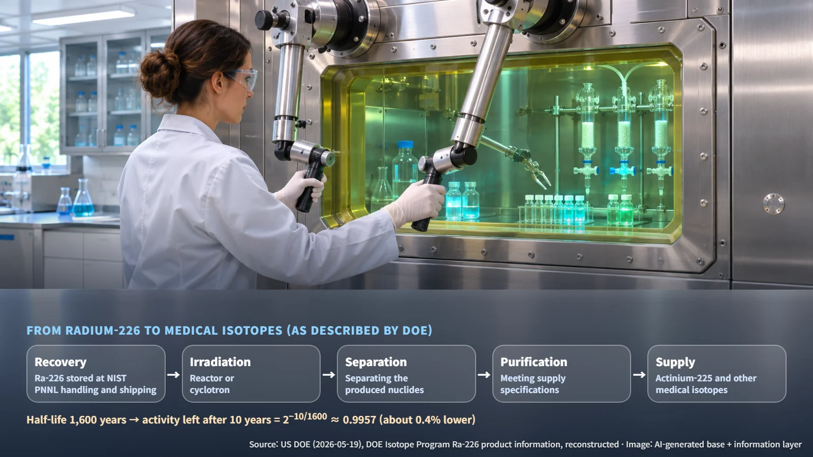
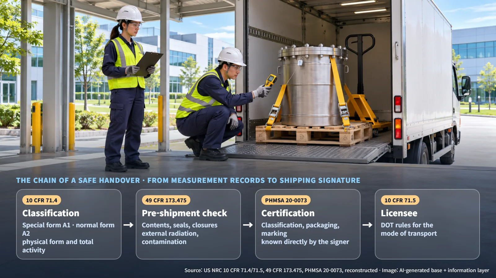
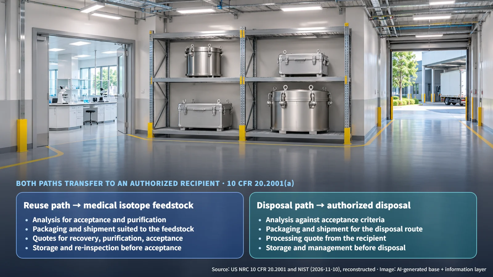

USA · NIST · DOE · Isotopes
From Legacy Waste to Cancer-Fighting Feedstock: How NIST Handed Its Radium-226 to DOE
NIST handed legacy radium-226 to DOE as feedstock for medical isotopes such as actinium-225. The transfer rests on measurement, packaging and transport rules.
When people picture radioactive material that has sat in a laboratory storeroom for years, they usually picture a disposal problem waiting to be solved. The picture changes when that same material can become the starting point for isotopes used in cancer treatment. That is the story the US National Institute of Standards and Technology (NIST) published on 10 November 2026, describing how it handed over its stock of radium-226. Below, we walk through what the transfer required, in three steps: the physics of the material, the transport rules, and the costs.

Where NIST's Radium-226 Came From, and Why It Is Moving Now
The radium-226 (Ra-226) was stored at NIST's campus in Gaithersburg, Maryland. It had been used in past research and medical treatment, and its research use ended about ten years ago. Since then, NIST has been reviewing how to manage the material safely.
The turning point came when a NIST radiation safety officer identified a reuse need at the US Department of Energy (DOE). On 19 May 2026, DOE described the collaboration between NIST and its Isotope Research, Development and Production office (IRP). The technical capability to handle, package and ship the material was developed and carried out by Pacific Northwest National Laboratory (PNNL).
What this case changes is the destination: material that was waiting for disposal has become the first link in a medical isotope supply chain. NIST is moving toward a systematic review of its existing materials, weighing their value, alternatives, costs and demand from other institutions, and it is working to standardize transfer procedures for similar organizations.
From Radium-226 to Cancer Isotopes: A 1,600-Year Half-Life and What the Feedstock Is Used For
According to DOE Isotope Program product information, radium-226 has a half-life of 1,600 years, and its decay produces radon-222 as a daughter nuclide (a new nuclide formed by radioactive decay). The half-life is the time it takes for radioactivity to fall by half.
So how much did the radioactivity drop during roughly ten years in storage? The remaining fraction is calculated as follows:
> Remaining fraction = (1/2)^(elapsed time / half-life) = 2^(−10/1600) ≈ 0.9957
Worked out, the radioactivity decreased by only about 0.4%. After a decade on the shelf, the material still has to be handled as a radiation source of almost the same strength as on day one. That is why a transfer starts with confirming the nuclide, its activity and the reference date of the measurement. The steady production of radon-222, a gas, is another reason long-stored material calls for careful management.
DOE describes a pathway in which recovered radium-226 is irradiated (exposed to radiation) in a reactor or a cyclotron (a type of particle accelerator) to produce medical isotopes such as actinium-225. The supply chain runs recovery → irradiation → separation → purification. DOE product information describes the supplied product in carbonate and nitrate forms, separated by ion exchange and shipped with a certificate of analysis (COA). The composition and purity of the NIST material are confirmed through the receiving records, and the transferred quantity and production yield have not been published.

Shielded Containers and Transport Rules: The Chain of a Safe Handover
According to NIST, DOE experts built a custom, heavy lead-shielded container to store and ship the material. A photo caption in the DOE article identifies a PNNL Type A package and a special form capsule (SFC). The container's certification document number and the activity of its contents have not been published.
Moving even a single container links several regulations together like a chain:
1. Package classification — Under US Nuclear Regulatory Commission (NRC) rule 10 CFR 71.4, special form radioactive material is material that meets a defined physical form and testing requirements. For Type A quantities, the A1 limit applies to special form material and the A2 limit to normal form material. The physical form of the material and its total activity are therefore the inputs to classification. 2. Pre-shipment inspection — 49 CFR 173.475 requires that, before each shipment of a radioactive material (Class 7) package, the shipper confirm by inspection or test the suitability of the contents, physical integrity, closure devices, seals, external radiation and contamination levels, and related items. 3. Shipping certification signature — A 2021 interpretation (20-0073) from the Pipeline and Hazardous Materials Safety Administration (PHMSA) explains that the person who signs the shipping certification must have direct knowledge of the classification, description, packaging and marking of the shipment. 4. Licensee obligations — 10 CFR 71.5 requires a licensee who transports licensed material outside the site of usage or on public highways, or who delivers it to a carrier, to comply with the Department of Transportation (DOT) regulations for that mode of transport.
The activity calculated above and the physical form of the material feed the first link, and the handover is complete only when the final signer has direct knowledge of those same facts. The holding institution's measurement records are where transport safety begins.

Reuse Instead of Disposal: What the Cost Comparison Looks At
NRC rule 10 CFR 20.2001(a) requires that licensed material be disposed of by transfer to an authorized recipient or by another authorized method. Whether the path is reuse or disposal, the basic framework is a handover to a qualified recipient. Setting the cost elements of the two paths side by side gives the following picture.
| Cost element | Reuse path | Disposal path | |---|---|---| | Characterization | Analysis needed for acceptance and purification | Analysis against disposal facility acceptance criteria | | Packaging and transport | Packaging and shipment suited to the feedstock form | Packaging and shipment conditions of the disposal route | | Acceptance and processing | Quotes for recovery, purification and acceptance | Processing quote from the authorized recipient | | Waiting and management | Storage and re-inspection before acceptance | Storage and management before disposal |
Source: reconstructed from US NRC 10 CFR 20.2001 and NIST
Both paths carry costs for analysis, packaging, transport and storage; the difference lies at the end. After the same preparation, the reuse path leads on to feedstock for medical isotopes. Actual unit costs have not been published, so a dollar-for-dollar comparison becomes possible once material-specific quotes are available.

For this reason, NIST says reuse, transfer and disposal after acquisition belong in the life-cycle cost of scientific work, with technical expertise, planning and funding prepared in advance.
Legacy radioactive material has a second destination besides disposal: reuse. With accurate measurement, compliant packaging and accountable signatures, the same material becomes feedstock that serves patients. It will be worth watching which cases at other institutions grow out of NIST's effort to standardize the transfer process.